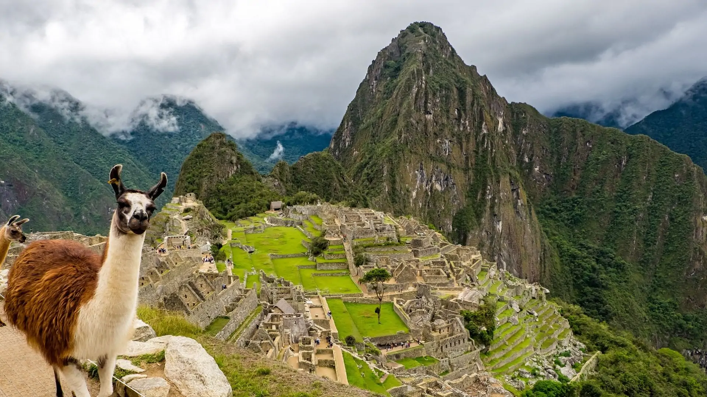

Ollantaytambo

Descubre Ollantaytambo aquí.
Montaña de Colores

Descubre Montaña de Colores aquí.
Laguna Humantay

Descubre Laguna Humantay aquí.
Pisac

Descubre Pisac aquí.
Machu Picchu
Descubre Machu Picchu aquí.
Tour y actividades

Descubre tour y actividades disponibles.
Consejos Prácticos
Descubre consejos practicos aqui.